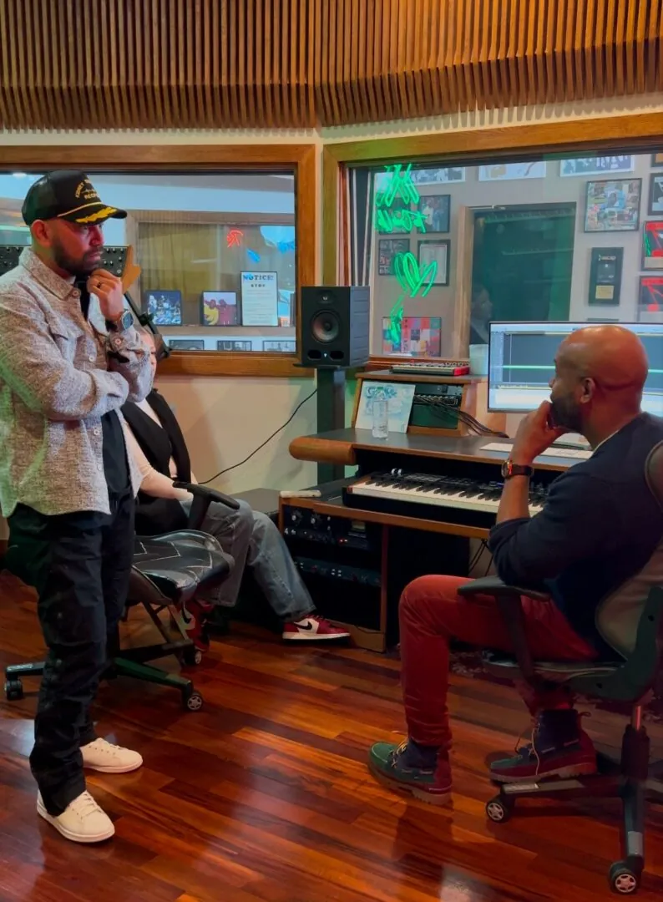

Podcast · YouTube · iHeartRadio · Apple · Spotify
The Kidney Fighter Show
Patient-run and unfiltered. Transplant, dialysis, the paperwork, the bad weeks, the good ones. Guests are people living it and the clinicians who treat them. Now produced under the Nephluence Project.